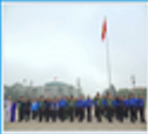
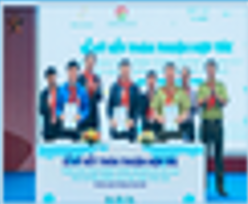
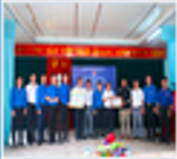
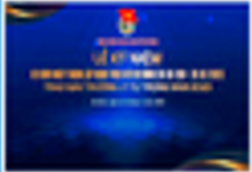

HOẠT ĐỘNG TÌNH NGUYỆN
Tình nguyện là một thuật ngữ đã
quá quen thuộc đối với mỗi chúng ta.
Chắc hẳn ai cũng đã và được nghe
thấy trên rất nhiều trang thông tin
truyền thông như Thời sự, báo,
internet nói về vai trò và ý nghĩa của
hoạt động này. Tình nguyện viên
thường được biết đến với những
công tác xã hội như từ thiện, giúp đỡ
những người dân phải chịu ảnh
hưởng của thiên tai hay những người
đang sống trong hoàn cảnh khó
khăn. Đa phần lực lượng tham gia
tình nguyện trong giai đoạn hiện nay
đều là những thanh niên có sức trẻ,
có nhiệt huyết và lòng nhân ái.
HOẠT ĐỘNG

100 cán bộ Đoàn tiêu biểu nhận Giải thưởng Lý Tự Trọng tham gia Lễ báo công, viếng Bác
22/03/2023

Khởi động Chương trình "Mizuiku - Em yêu nước sạch năm 2023
20/03/2023

Bí thư T.Ư Đoàn Ngô Văn Cương thăm, làm việc tại Tổng đội Thanh niên xung phong 5 Nghệ An
19/03/2023

Trung ương Đoàn công bố 100 cán bộ Đoàn nhận giải thưởng Lý Tự Trọng năm 2023
16/03/2023